Overview of South India
South India is known for its peaceful beaches, ancient Dravidian temples, green hill stations, modern IT cities, rich culture and serene backwaters. The region includes Tamil Nadu, Karnataka, Kerala, Andhra Pradesh and Telangana — each offering a unique travel experience. South India is perfect for nature lovers, culture explorers and anyone seeking calm and beauty.
Top Cities to Visit
Here are five major cities that offer culture, modernity, heritage and scenic beauty.
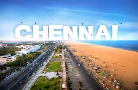
Chennai
Known for Marina Beach, Kapaleeshwarar Temple, museums and music culture. Chennai offers a mix of heritage and modern city life, making it a perfect starting point for South India trips.
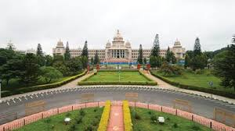
Bengaluru
India’s tech hub with beautiful gardens, cafes, nightlife and nearby hill escapes. A comfortable city for new travellers, offering culture and modern amenities.
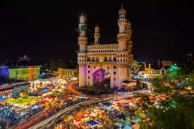
Hyderabad
Famous for Charminar, Golconda Fort and high-tech cityscape. Hyderabad blends old-world history with modern architecture, ideal for heritage travellers.
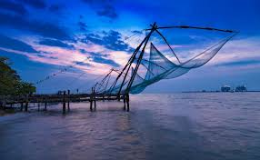
Kochi
A cultural port city with colonial architecture, Chinese fishing nets, art cafes and access to the world-famous backwaters. Great for relaxed travel.
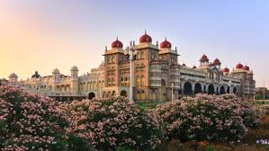
Mysore
Known for the magnificent Mysore Palace, Chamundi Hills and clean streets. Mysore gives a royal experience and is one of India’s most beautiful heritage cities.
Major Travel Experiences in South India
South India offers unique travel experiences that you won’t find anywhere else.
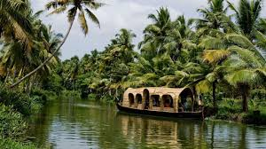
Kerala Houseboats
Stay on a traditional kettuvallam and float through peaceful backwaters.
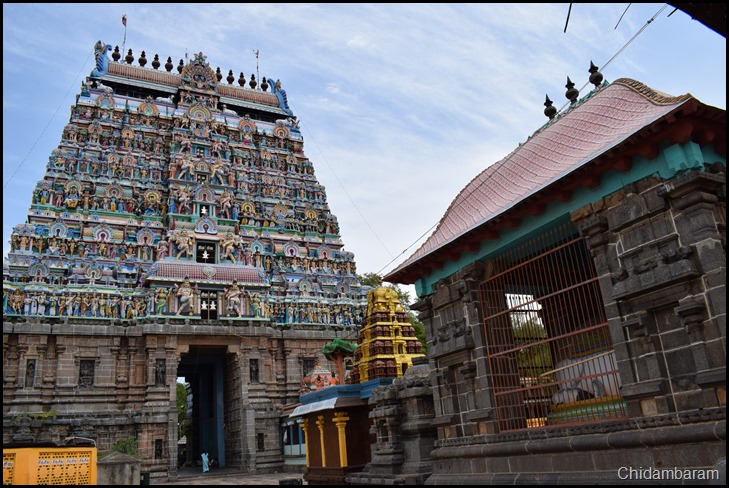
Tamil Nadu Temple Trail
Explore ancient Dravidian temples like Meenakshi, Brihadeeswara and Rameswaram.
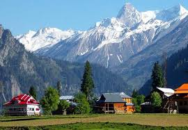
Hill Stations
Enjoy cool weather and scenic tea gardens in Ooty, Munnar or Coorg.
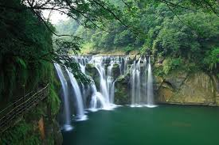
Waterfalls
Experience Athirapally, Hogenakkal and Jog Falls — perfect for nature lovers.
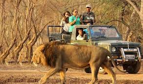
Wildlife Safari
Visit Bandipur, Periyar or Nagarhole for elephants, tigers and serene forests.
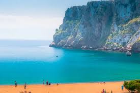
Beach Life
Relax on calm beaches in Kerala, Tamil Nadu, Karnataka and Goa.
Beaches & Backwaters
South India is famous for peaceful beaches and the stunning Kerala backwaters.
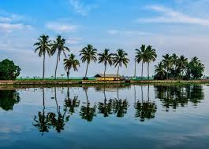
Alappuzha Backwaters
Famous for houseboats, coconut trees and calm waterways. A must-visit Kerala experience.
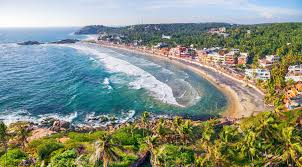
Kovalam Beach
Popular for sunset views, lighthouse beach, water activities and Ayurvedic therapies.
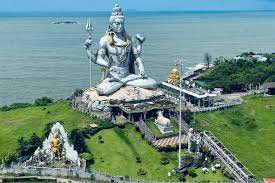
Gokarna
Quiet and clean beaches like Om Beach and Kudle Beach — perfect for peaceful travel.
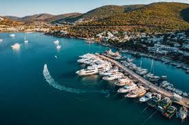
Marina Beach
One of the world’s longest beaches — ideal for early morning and evening walks.
Suggested 6-Day South India Itinerary
A well-balanced travel plan covering cities, temples, nature and backwaters.
- Day 1 – Chennai: Marina Beach, Kapaleeshwarar Temple and Fort Museum.
- Day 2 – Mahabalipuram: Shore Temple, Five Rathas and beach sunset.
- Day 3 – Bengaluru: Cubbon Park, MG Road, museums and cafes.
- Day 4 – Mysore: Mysore Palace, Chamundi Hills and fountains.
- Day 5 – Kochi: Fort Kochi, Chinese nets, Mattancherry Palace.
- Day 6 – Alappuzha: Half-day houseboat ride and backwater cruise.
Budget for a 6-Day Trip (Approx.)
| Category | Estimated Cost (₹) | Notes |
|---|---|---|
| Hotels | 1500 – 3000/night | Depends on city and season |
| Transport | 3000 – 6000 | Buses, trains or flights |
| Houseboat | 5000 – 9000 | Shared or private options |
| Entry Tickets | 300 – 1000 | Sightseeing places |
| Local Travel | 300 – 600/day | Autos, metro, taxis |
Best Time to Visit South India
- November – February: Best time — pleasant weather for beaches and sightseeing.
- March – May: Hot, but good for hill stations like Ooty and Munnar.
- June – September: Monsoon season — beautiful in Kerala, waterfalls are full.
Destination Summary
| City / Place | Best For | Must Visit | Suggested Stay |
|---|---|---|---|
| Chennai | Culture & Beaches | Marina, Kapaleeshwarar | 1–2 days |
| Kochi | Heritage & Backwaters | Fort Kochi | 2 days |
| Mysore | Palaces | Mysore Palace | 1 day |
| Ooty / Munnar | Hill Stations | Tea Gardens | 2 days |
| Hyderabad | History & Tech | Charminar, Fort | 2 days |